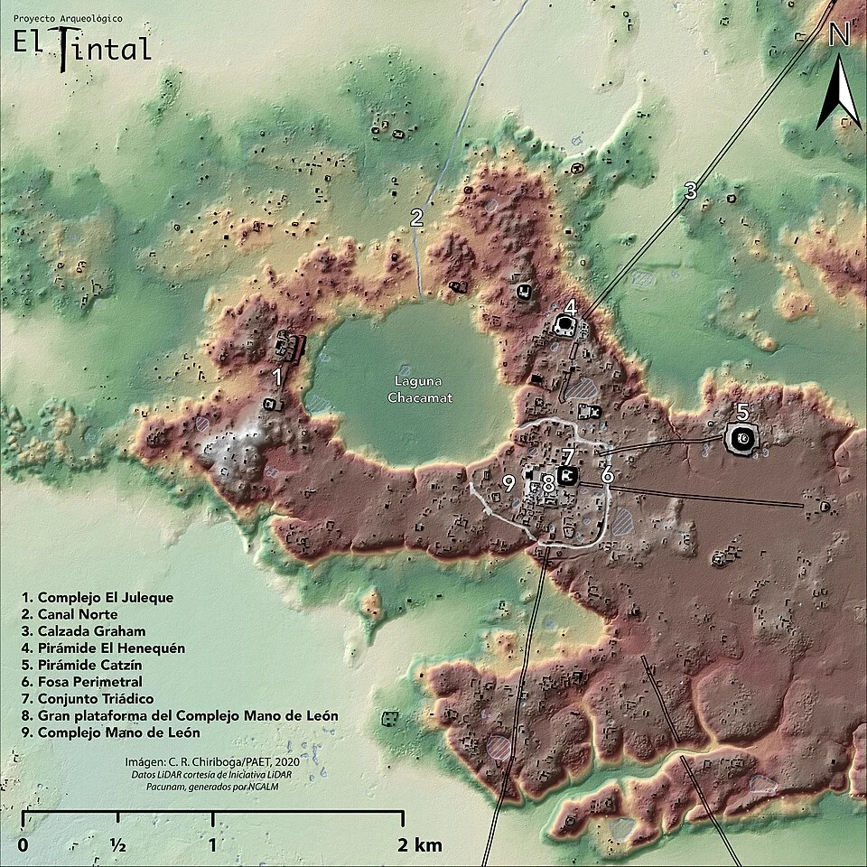

Yucatán forest-floor lidar
Move a light around a synthetic elevation patch and find the low ridge. Compare the effect with the archived lidar map.
Inspect source image

Move a light around a synthetic elevation patch and find the low ridge. Compare the effect with the archived lidar map.
